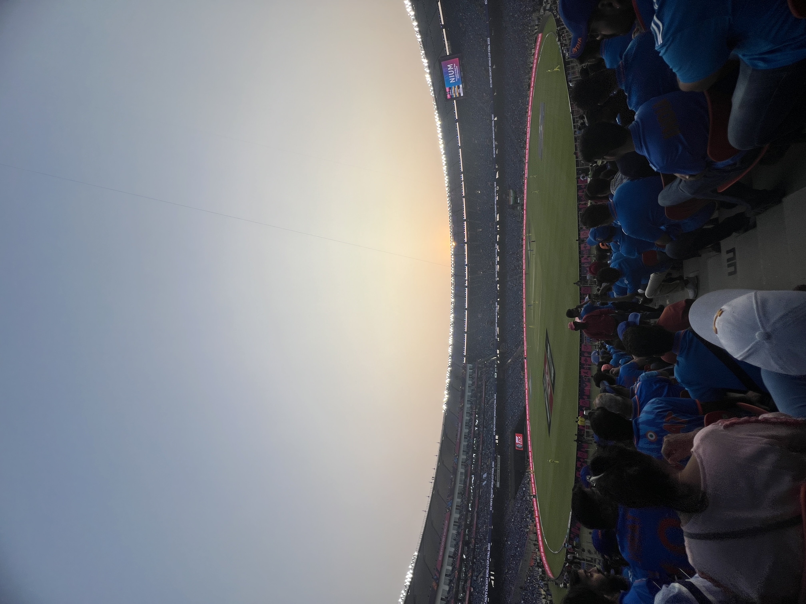

70th BPSC PYQHost-country one-liners are BPSC's favourite sports question: "Which country is going to host the 20th Asian Games in 2026?" — answer: Japan (Aichi–Nagoya, 19 Sep–4 Oct 2026). Same paper asked "Which country hosted the 2022 Winter Olympics?" — China (Beijing). 2026 Winter edition: Milano–Cortina, Italy (6–22 Feb 2026; mascots Milo & Tina).
70th BPSC PYQ"Which game is NOT included in the (Paris 2024) Olympics?" — answer: Cricket (Fencing, Modern Pentathlon and Triathlon are all Olympic sports). Payoff for 72nd: cricket RETURNS at LA28 (T20, 6 teams per gender, venue Fairplex, Pomona — confirmed 15 Apr 2025) after 128 years (last played Paris 1900).
69th BPSC PYQSports venue ↔ tournament matching: the 69th asked which pairs are correctly matched — trap: "Flushing Meadows : French Open". Correct bank: Flushing Meadows ↔ US Open • Roland Garros ↔ French Open • All England Club ↔ Wimbledon • Melbourne Park ↔ Australian Open.
71st + 70th BPSC PYQGI + Books crossover: 71st asked "The art of crafting which item in Meerut has received a GI tag?" — Sports Goods. 70th asked the author of "I Have the Streets: A Kutti Cricket Story" — R. Ashwin (with S. Monga). Sports GK hides inside GI-tag and book questions.
💡 Deep-dive ready: Champions Trophy 2025, WTC Final 2025, T20 World Cup 2026 ball-by-ball context, IPL 2025 + 2026, U19 & Women's World Cups, Asia Cup, retirements, and domestic-trophy statics:
Cricket 2025–26 Master Detail →
A. India's Golden Cricket Window (Mar 2025 – Mar 2026) HOTTEST
India won four ICC titles in ~12 months across men's, women's and U19 cricket — plus a maiden IPL crown. Learn winner ↔ runner-up ↔ venue ↔ margin cold.
Event
Winner
Final: beat (margin)
Venue / Date
Key Man
ICC Champions Trophy 2025
India (3rd CT title)
New Zealand by 4 wickets
Dubai, 9 Mar 2025
Rohit Sharma 76 (POTM)
WTC Final 2025
South Africa (1st WTC)
Australia by 5 wickets
Lord's, 11–14 Jun 2025
Aiden Markram 136 (POTM)
Asia Cup 2025 (T20, UAE)
India (9th title)
Pakistan by 5 wickets (PAK 146)
Dubai, 28 Sep 2025
Tilak Varma 69*; Kuldeep 4 wkts
ICC Women's ODI WC 2025
India — MAIDEN title
South Africa by 52 runs (298/7 v 246)
DY Patil, Navi Mumbai, 2 Nov 2025
Shafali 87+2/36 (POTM); Deepti POT (22 wkts)
ICC U19 World Cup 2026
India (record 6th title)
England by 100 runs (411/9 v 311)
Harare, 6 Feb 2026
Vaibhav Sooryavanshi 175 off 80 (POTM + POT)
ICC Men's T20 WC 2026
India (3rd title; back-to-back; first host winner)
New Zealand by 96 runs
Narendra Modi Stadium, Ahmedabad, 8 Mar 2026
Bumrah 4/15 (POTM); Sanju Samson POT
T20 WC 2026 colour: co-hosted by India + Sri Lanka (20 teams, 7 Feb–8 Mar 2026); SF — India beat England by 7 runs (Wankhede); India's only loss: South Africa by 76 runs (Super 8); the India–Pakistan match was moved to Colombo (15 Feb) after government-level drama — India won by 61 runs (Ishan Kishan 77); Bangladesh withdrew (refused to travel) and was replaced by Scotland.
IPL 2025:RCB — maiden title, beat Punjab Kings by 6 runs at Ahmedabad (3 Jun 2025); Orange Cap: Sai Sudharsan (GT, 759 runs); MVP: Suryakumar Yadav.
IPL 2026:RCB again — back-to-back, beat Gujarat Titans by 5 wickets at Ahmedabad (31 May 2026); Kohli 75* (POTM). Awards sweep by 15-year-old Vaibhav Sooryavanshi (RR): Orange Cap + MVP + Emerging Player (776 runs, SR 237.30); Purple Cap: Kagiso Rabada (29 wkts).
Retirements: Rohit Sharma (Tests, 7 May 2025) and Virat Kohli (Tests, ~12 May 2025; 123 Tests, 9,230 runs, 30 hundreds) — both had quit T20Is in Jun 2024; R. Ashwin quit all international cricket on 18 Dec 2024.

Narendra Modi Stadium, Ahmedabad — venue of the T20 World Cup 2026 final (India d. NZ) and the IPL 2025 & 2026 finals (RCB). Photo: Wikimedia Commons (CC0).
B. Multi-Sport Games — Hosts, Mascots, Toppers VERIFIED JUL 2026
Slogan "Imagine One Asia"; 41 sports; 3rd time in Japan
LA28 Olympics
Los Angeles; 14–30 Jul 2028
—
3rd LA Games (1932, 1984); 5 new sports: cricket T20, flag football, squash, lacrosse sixes, baseball/softball
National Games 2027 (39th)
Meghalaya (first time)
—
Flag handed over at Uttarakhand closing ceremony
Paris 2024 (background, still asked): India won 6 medals (1S, 5B) — Neeraj Chopra javelin Silver (89.45m); Manu Bhaker 2 Bronze (10m air pistol + mixed team with Sarabjot Singh) — first Indian post-1947 with two medals at one Games; Swapnil Kusale (50m rifle 3P), Aman Sehrawat (wrestling 57kg), men's hockey — all Bronze.
India's 2030 CWG bid: official proposal submitted (30 Aug 2025) to host the 2030 Commonwealth Games at Ahmedabad — proposal stage only; award decision not yet announced at cutoff.
🧠 Mnemonic — Games-Host Ladder "H-U-B-M-G-N-L" Harbin (Asian Winter 2025) → Uttarakhand (National Games 2025) → Bihar (Khelo India Youth 2025) → Milano-Cortina (Winter Oly 2026) → Glasgow (CWG 2026) → Nagoya (Asian Games 2026) → LA (Olympics 2028). Winter chain: Beijing 2022 → Milano-Cortina 2026 → French Alps 2030.
C. Football — FIFA WC 2026 in Progress LIVE AT CUTOFF
FIFA World Cup 2026 (USA/Canada/Mexico): first 48-team edition, 104 matches, 16 venues; opened 11 Jun 2026 at Estadio Azteca (Mexico City — first stadium to host 3 World Cups); FINAL: 19 Jul, MetLife Stadium, New Jersey — after the 15 Jul research cutoff but before the 26 Jul exam — re-check the winner 2-3 days before the paper. Verified at cutoff: SF1 Spain 2-0 France (14 Jul, AT&T Stadium); SF2 England v Argentina (15 Jul, Atlanta) was reported 1-2 to Argentina from a single source — treat the finalist pairing as provisional.
UEFA Champions League 2025:PSG — first title, 5-0 v Inter Milan (Allianz Arena, Munich, 31 May 2025). UCL 2026: PSG retained — 1-1 v Arsenal, 4-3 on penalties (Puskás Aréna, Budapest, 30 May 2026; first UCL final in Hungary).
Indian football:ISL 2024-25 — Mohun Bagan SG (beat Bengaluru FC 2-1 aet, Salt Lake, 12 Apr 2025 — completed the league double); ISL 2025-26 — East Bengal, maiden ISL title (21 May 2026, first national league crown in ~22 years); Durand Cup 2025 (134th) — NorthEast United (6-1 v Diamond Harbour, defended title); Santosh Trophy 2025-26 — Services (1-0 v Kerala, 8th title; final round hosted by Assam).
Statics: Durand Cup (1888, Kolkata) = world's 3rd-oldest surviving football tournament; Santosh Trophy = state teams, since 1941.
D. Hockey — India's Asian Crown Won in Bihar BIHAR ANCHOR
Men's Asia Cup 2025 (12th) — INDIA champion at RAJGIR, BIHAR: beat Korea 4-1 in the final (7 Sep 2025) — 4th title; qualified for the FIH World Cup 2026; Malaysia 3rd; Pakistan withdrew. Rajgir Sports Academy received Asian Hockey Federation affiliation (FIH President Tayyab Ikram).
Hockey India League: HIL 2024-25 (men) — Shrachi Rarh Bengal Tigers (4-3 v Hyderabad Toofans, Rourkela, 1 Feb 2025); inaugural Women's HIL 2024-25 — Odisha Warriors (Ranchi). HIL 2025-26 (men) — Vedanta Kalinga Lancers (3-2 v Ranchi Royals, Bhubaneswar, 26 Jan 2026); Women's HIL 2025-26 — SG Pipers (shootout v Shrachi Bengal Tigers, Ranchi, 10 Jan 2026).
Upcoming: FIH World Cup 2026 — Belgium/Netherlands, 15–30 Aug 2026 (men + women). India women's team: Sjoerd Marijne re-appointed chief coach (14 Jan 2026).
E. Badminton • Tennis • Chess • Athletics — Quick Bank MATCHING BANK
Badminton: BWF Worlds 2025 (Paris) — India 1 medal: Satwiksairaj–Chirag BRONZE (14-year medal streak alive since 2011). 2026: Satwik–Chirag won Singapore Open (S750); Lakshya Sen won Australian Open 2025; Ayush Shetty won US Open 2025. Thomas Cup 2026: China (13th); India BRONZE; Uber Cup 2026: Korea. BWF Worlds 2026: NEW DELHI, 17–23 Aug, Indira Gandhi Stadium — first Worlds in India since 2009 (Hyderabad).
Tennis 2026 Slams (so far):AO 2026 — Alcaraz d. Djokovic (maiden AO; youngest career-slam of the Open Era at 22; 9th man overall); women's: Rybakina d. Sabalenka. RG 2026 — Zverev d. Cobolli (maiden slam); women's: Mirra Andreeva. Wimbledon 2026 — Sinner d. Zverev (defended title); women's: Noskova d. Muchova (all-Czech final; youngest Wimbledon women's champion in 15 years). US Open 2026: 24 Aug–13 Sep (UPCOMING).
Chess:D. Gukesh = reigning World Champion (d. Ding Liren, Singapore, Dec 2024); Praggnanandhaa won Tata Steel Masters 2025 (2nd Indian after Anand 2006); Javokhir Sindarov (UZB) won FIDE World Cup 2025 (Goa) AND Candidates 2026 (Cyprus, 10/14 — youngest-ever) → challenges Gukesh late 2026 in the youngest World Championship match ever (both 20). Divya Deshmukh won the FIDE Women's World Cup 2025 (beat Koneru Humpy in an all-Indian final, Batumi) → became India's 88th GM, 4th Indian woman GM.
Athletics:Neeraj Chopra crossed 90m — 90.23m NR at Doha Diamond League (16 May 2025), first Indian over 90m — but finished 2nd behind Julian Weber (GER, 91.06m); won Paris DL (88.16m); 2nd at DL Final, Zurich. World Athletics C'ships 2025 (Tokyo): India ZERO medals — Neeraj 8th; gold: Keshorn Walcott (TTO).
Other individual honours: World Boxing C'ships 2025 (Liverpool) — India 4 medals, all women: GOLD Jaismine Lamboria (57kg), GOLD Minakshi Hooda (48kg); Wrestling Worlds 2025 (Zagreb) — Antim Panghal bronze (53kg); ISSF Worlds 2025 (Cairo) — Samrat Rana GOLD (10m air pistol); F1 2025 — Lando Norris champion (McLaren, 423 v Verstappen 421, decided at Abu Dhabi).
Divya Deshmukh (all-Indian final v Humpy) — India's 88th GM
Batumi; Jul 2025
Neeraj Chopra 90m
90.23m NR — first Indian over 90m; finished 2nd (Weber 91.06)
Doha Diamond League; 16 May 2025
BWF Worlds 2026
NEW DELHI hosts — first Worlds in India since 2009
IG Stadium; 17–23 Aug 2026
CWG 2026 (23rd)
Only 10 sports; hockey/cricket/wrestling/badminton/shooting dropped
Glasgow; 23 Jul–2 Aug 2026
Asian Games 2026 (20th)
"Imagine One Asia"; 41 sports; 3rd time in Japan
Aichi–Nagoya; 19 Sep–4 Oct 2026
LA28 Olympics
Cricket T20 returns (6 teams; Fairplex, Pomona) + 4 other new sports
Los Angeles; 14–30 Jul 2028
🔶 Bihar Connection
🏛️ Bihar = India's Sports-Host Story of 2025 — The Safest BPSC Angle
Khelo India Youth Games 2025 (7th) — Bihar's FIRST national multi-sport event: 4–15 May 2025 across Patna, Rajgir, Gaya, Bhagalpur, Begusarai (+ New Delhi for shooting/gymnastics/track cycling); ~8,500 athletes, 28 sports (+ esports demo); sepak takraw debuted; mascot Gajasimha (Pala-era/Nalanda motif, unveiled by CM Nitish Kumar + Union Minister Mandaviya); opened virtually by PM Modi on 4 May at Patliputra Sports Complex. Bihar finished 15th with 36 medals (7G-11S-18B) — best-ever (jumped from 28th; doubled its all-time tally); Khushi Yadav won girls' 2000m steeplechase gold (9:52.10).
Men's Hockey Asia Cup 2025 — Rajgir: India beat Korea 4-1 in the final (7 Sep 2025) on Bihar soil — 4th title + FIH World Cup 2026 qualification; Rajgir Sports Academy received Asian Hockey Federation affiliation. Earlier, Rajgir also hosted the Women's Asian Champions Trophy (Nov 2024 — India won).
Sepak Takraw World Cup 2025 (5th ISTAF) — Patna: Patliputra Indoor Stadium, 20–25 Mar 2025, 21 nations; India men's regu team won its first-ever World Cup GOLD (d. Japan 2-1); India 4th in the medal tally (7 medals); praised by PM Modi.
Vaibhav Sooryavanshi (Tajpur, Samastipur district; b. 27 Mar 2011): youngest-ever IPL signing (₹1.1 cr, RR, age 13); youngest IPL debutant (19 Apr 2025, 14y 23d); youngest T20 centurion (101 off 38 v GT, 28 Apr 2025); IPL 2026 Orange Cap + MVP + Emerging Player (776 runs, age 15); U19 WC 2026 Player of the Tournament (175 in the final); ₹50 lakh Bihar govt reward (Feb 2026).
Ranji Trophy 2025-26 — Bihar Plate champions: beat Manipur by 568 runs in the Plate final → promoted to the Elite group for 2026-27 (reported 27 Jan 2026).
National Games 2025 (Uttarakhand): Bihar's women's lawn bowls triples GOLD (Khushboo Kumari, Nikhat Khatoon, Payal Preeti — d. West Bengal 15-14) = Bihar's first National Games gold in 25 years.
Shreyasi Singh: international shooter (Paris Olympics 2024) and BJP MLA from Jamui — the 70th BPSC asked her constituency directly.
Infrastructure:45,000-seat international cricket stadium inaugurated at Rajgir (~Oct 2025) — Bihar's first world-class cricket venue; Bihar Budget 2025-26 allocated ₹574.33 crore for a 100-acre international stadium at Punpun block (Patna); Rajgir Sports Complex spans ~90 acres.
🔗 Cross-Topic Connections
↔ Topic #19 (Bihar Sports): This page's Bihar box IS Topic #19's backbone — KIYG 2025, Rajgir hockey, Patna sepak takraw, Sooryavanshi, Ranji promotion, Shreyasi Singh, stadium projects. Revise both together. ↔ Topic #62 (Sports Static): Trophy ↔ sport bank (Ranji/Duleep/Irani/Vijay Hazare/Syed Mushtaq Ali — cricket; Durand/Santosh — football; Thomas/Uber — badminton; Beighton Cup/Aga Khan Cup — hockey), Grand Slam venues, Olympic motto ("Citius, Altius, Fortius – Communiter" — "Together" added 2021). ↔ Topic #9 (Awards & Honours): Padma 2026 sports awardees (Rohit Sharma, Harmanpreet Kaur, Savita Punia — Padma Shri; Vijay Amritraj — Padma Bhushan); Laureus 2026 (Alcaraz, Sabalenka, Norris); Arjuna/Khel Ratna statics. ↔ Topic #13 (Books & Authors): R. Ashwin + S. Monga, "I Have the Streets: A Kutti Cricket Story" (70th BPSC PYQ). ↔ Topic #22 (GI Tags & Culture): Meerut sports goods GI tag (71st BPSC PYQ) — sports hides inside the GI list. ↔ Topic #12 (Important Days): National Sports Day = 29 August (Major Dhyan Chand's birth anniversary); International Olympic Day = 23 June. ↔ Topic #4 (Summits & Groupings): IOC Session, Mumbai (Oct 2023) approved the 5 new LA28 sports — India's sports-diplomacy moment alongside the 2030 CWG (Ahmedabad) bid. ↔ Topic #20 (Bihar Infra & Projects): Rajgir 45,000-seat stadium and the ₹574.33 cr Punpun stadium figure in both sports and infrastructure questions.
📰 Current Relevance & Potential Traps (2025–26 Cycle)
Near-certain one-liner: India won the men's T20 World Cup 2026 — beat New Zealand by 96 runs at Narendra Modi Stadium, Ahmedabad (8 Mar 2026). Traps: it was India's 3rd T20WC title (2007, 2024, 2026); first team to win back-to-back; first host to win. Bumrah = final POTM (4/15); Sanju Samson = Player of the Tournament — don't swap them.
New Zealand lost TWO ICC finals to India in 12 months — Champions Trophy 2025 (Dubai) and T20 WC 2026 (Ahmedabad). Venue swap is the classic trap.
Women's WC 2025: India's maiden ODI World Cup — beat South Africa by 52 runs, DY Patil Stadium, Navi Mumbai; Harmanpreet became the 3rd Indian World-Cup-winning captain (Kapil Dev '83, Dhoni '11). Deepti Sharma = POT (22 wickets incl. 5/39 in the final); Wolvaardt's 571 runs = tournament record.
Tennis year-swap trap: Wimbledon 2025 = Sinner (1st title) + Swiatek; Wimbledon 2026 = Sinner (defended) + Noskova. AO 2026: Alcaraz completed the career slam at 22 (youngest, Open Era) beating Djokovic; RG 2026: Zverev's maiden slam (Alcaraz was out injured) — do NOT assign Alcaraz the 2026 French Open.
Neeraj trap: 90.23m at Doha (16 May 2025) was a NATIONAL RECORD but only SILVER (Julian Weber threw 91.06m). At the Tokyo Worlds (Sep 2025) Neeraj finished 8th and India won ZERO medals — gold went to Keshorn Walcott (Trinidad & Tobago).
Glasgow CWG 2026 (23 Jul–2 Aug) — starts 3 days BEFORE the exam: trimmed to 10 sports; hockey, cricket, wrestling, badminton, squash, table tennis and shooting are DROPPED. India officially proposed Ahmedabad for CWG 2030 (proposal stage only — no host decision yet).
FIFA WC 2026 (11 Jun–19 Jul): the final (MetLife Stadium, 19 Jul) falls AFTER the 15 Jul research cutoff but BEFORE the 26 Jul exam — re-check the champion in exam week. Verified facts safe to answer: hosts USA/Canada/Mexico; 48 teams; 104 matches; opener at Estadio Azteca.
Chess upcoming: Gukesh v Sindarov World Championship match (late 2026) — youngest title match ever (both 20). Sindarov's route: World Cup 2025 (Goa) → Candidates 2026 (Cyprus, 10/14 record). Divya Deshmukh = 2025 Women's World Cup champion, India's 88th GM.
Statics that never age: Durand Cup 1888 (world's 3rd-oldest football tournament); Santosh Trophy since 1941; Ranji Trophy since 1934-35; Khelo India scheme revamped 2018 (1st KIYG: Delhi); TOPS = Target Olympic Podium Scheme; National Games overall champion = Raja Bhalindra Singh Trophy; BWF Worlds in India: 2009 Hyderabad → 2026 New Delhi.
✍️ MCQ Practice Set — 25 Questions (BPSC Level)
Q1. Which country will host the 20th Asian Games in 2026? (70th BPSC pattern)
✅ Correct Answer: (B) — The 20th Asian Games (19 Sep–4 Oct 2026) will be hosted by Aichi–Nagoya, Japan — the third time Japan hosts the Asiad (Tokyo 1958, Hiroshima 1994). The 70th BPSC asked exactly this host question; (A) China hosted the 19th edition (Hangzhou 2023).
Q2. At the Paris 2024 Olympics, which of the following games was NOT included? (70th BPSC pattern)
✅ Correct Answer: (C) — Cricket was last played at the 1900 Paris Olympics and returns only at LA28 (T20, 6 teams per gender, Fairplex, Pomona — confirmed April 2025). Fencing, Modern Pentathlon and Triathlon are all core Olympic sports.
Q3. Match List-I (Grand Slam) with List-II (Venue): (69th BPSC pattern)
a) Australian Open — 1) All England Club
b) French Open — 2) Melbourne Park
c) Wimbledon — 3) Roland Garros
d) US Open — 4) Flushing Meadows
✅ Correct Answer: (A) — Australian Open ↔ Melbourne Park; French Open ↔ Roland Garros (Paris); Wimbledon ↔ All England Club (London); US Open ↔ Flushing Meadows (New York). The 69th BPSC trap was pairing Flushing Meadows with the French Open.
Q4. The art of crafting which item in Meerut has received a GI tag? (71st BPSC PYQ)
Meerut Scissors is the registered GI — "Meerut Scissors" holds GI Registration Application No. 389, registered by the GI Registry in April 2015. Meerut's celebrated sports goods are the district's ODOP (One District One Product) product, not a registered GI, so option (A) is technically incorrect even though it is a widely repeated recall. ⚠️ Expert keys for this real 71st BPSC question are split: Drishti/Genius key it as Scissors, while StudyIQ (claiming to mirror the official key) says Sports Goods — recognize this question if it is repeated. ✅ Correct Answer: (D)
Q5. Who is the author of the autobiography "I Have the Streets: A Kutti Cricket Story"? (70th BPSC PYQ)
✅ Correct Answer: (C) — Off-spinner R. Ashwin co-wrote the memoir with journalist Sidharth Monga. Ashwin retired from all international cricket on 18 December 2024 — a date worth pairing with the book question.
Q6. Shreyasi Singh, MLA, who represented India in shooting at the Paris Olympics 2024, was elected from which constituency in Bihar? (70th BPSC PYQ)
✅ Correct Answer: (D) — Shreyasi Singh, an international trap/double-trap shooter and Paris 2024 Olympian, is the BJP MLA from Jamui. A signature BPSC crossover: Bihar polity × sports.
Q7. Which field game is the most popular in the world? (70th BPSC PYQ)
✅ Correct Answer: (A) — Football (soccer) is the world's most popular field game by following and participation — fitting, with the 48-team FIFA World Cup 2026 underway in USA/Canada/Mexico.
Q8. Which country hosted the 2022 Winter Olympics, and which hosts the 2026 edition? (70th BPSC pattern)
✅ Correct Answer: (D) — Beijing (China) hosted the 2022 Winter Olympics; Milano–Cortina (Italy) hosted the 2026 edition (6–22 Feb 2026; mascots Milo & Tina). Next: French Alps 2030. South Korea hosted 2018 (Pyeongchang).
Q9. At the Paris 2024 Olympics, who became the first Indian since Independence to win two medals at a single Olympic Games? (70th BPSC theme)
✅ Correct Answer: (B) — Manu Bhaker won bronze in the 10m air pistol AND the 10m air pistol mixed team (with Sarabjot Singh) — the first Indian post-1947 with two medals at one Games. Neeraj won javelin silver (89.45m); India's total was 6 medals (1S, 5B).
Q10. Match List-I (Trophy) with List-II (Sport): (69th BPSC matching pattern)
a) Durand Cup — 1) Cricket
b) Ranji Trophy — 2) Football
c) Thomas Cup — 3) Badminton
d) Beighton Cup — 4) Hockey
✅ Correct Answer: (C) — Durand Cup (1888, world's 3rd-oldest football tournament) ↔ Football; Ranji Trophy (1934-35) ↔ Cricket; Thomas Cup ↔ Badminton (men's team); Beighton Cup ↔ Hockey. Static bank that BPSC rotates every few years.
Q11. Consider the following statements about the ICC Champions Trophy 2025:
1. India defeated New Zealand by 4 wickets in the final.
2. The final was played at Dubai.
3. It was India's third Champions Trophy title.
Which of the statements given above are correct?
✅ Correct Answer: (D) — All three hold: final on 9 Mar 2025 at Dubai (Rohit Sharma 76, POTM); India's CT titles: 2002 (shared with Sri Lanka), 2013, 2025. Remember New Zealand lost BOTH ICC white-ball finals to India in this window.
Q12. The ICC World Test Championship Final 2025 at Lord's was won by:
✅ Correct Answer: (B) — South Africa chased 282 (283/4) to beat Australia by 5 wickets (11–14 Jun 2025) — their FIRST WTC title; Aiden Markram's 136 earned Player of the Match. Option (A) reverses the teams — the classic trap.
Q13. The ICC Men's T20 World Cup 2026 final was decided by which result?
✅ Correct Answer: (A) — Final: 8 Mar 2026, Ahmedabad — India d. New Zealand by 96 runs; Bumrah 4/15 (POTM). (B) was the SEMI-final (India d. England by 7 runs, Wankhede); (C) was India's only loss (Super 8). India = 3rd title, first back-to-back winner, first host winner.
Q14. India's ICC Women's ODI World Cup 2025 triumph is best described as:
✅ Correct Answer: (C) — 2 Nov 2025: India 298/7 (Shafali Verma 87 + 2/36) beat South Africa 246 — maiden title. Deepti Sharma was Player of the Tournament (22 wickets, incl. 5/39 in the final). Harmanpreet = 3rd Indian World-Cup-winning captain after Kapil (1983) and Dhoni (2011).
Q15. The ICC U19 World Cup 2026 final (Harare) saw India:
✅ Correct Answer: (B) — 6 Feb 2026, Harare: IND 411/9 (Sooryavanshi 175 off 80 — highest in a U19 WC final; captain Ayush Mhatre 53) beat England 311. Sooryavanshi (from Samastipur, Bihar) was POTM and Player of the Tournament (439 runs). India's 6th U19 crown is the most by any nation.
Q16. Which statement correctly captures IPL 2025 and IPL 2026?
✅ Correct Answer: (A) — IPL 2025: RCB d. PBKS by 6 runs (3 Jun 2025); IPL 2026: RCB d. GT by 5 wickets (31 May 2026; Kohli 75* POTM). Bonus: 15-year-old Vaibhav Sooryavanshi swept IPL 2026's Orange Cap + MVP + Emerging Player awards; Purple Cap: Kagiso Rabada (29).
Q17. Consider the following statements about the Khelo India Youth Games 2025:
1. It was hosted by Bihar for the first time.
2. Its mascot was Gajasimha, inspired by Pala-era/Nalanda art.
3. Bihar finished 15th with 36 medals — its best-ever performance.
Which of the statements given above are correct?
✅ Correct Answer: (D) — All three are correct: 7th KIYG (4–15 May 2025) ran in Patna, Rajgir, Gaya, Bhagalpur, Begusarai (+ New Delhi); Maharashtra topped (158 medals, 3rd straight title); Bihar's 36 medals (7G-11S-18B) doubled its all-time KIYG tally.
Q18. The final of the Men's Hockey Asia Cup 2025 — won by India — was played at:
✅ Correct Answer: (B) — Rajgir, Bihar hosted the 12th Men's Asia Cup (29 Aug–7 Sep 2025); India beat Korea 4-1 for a 4th title and FIH World Cup 2026 qualification. Pakistan withdrew; Malaysia finished 3rd. Traps: (A) wrong opponent (Pakistan didn't play) and (C)/(D) wrong cities.
Q19. Regarding the National Games of India, pick the correct statement:
✅ Correct Answer: (C) — 38th National Games: Uttarakhand, 28 Jan–14 Feb 2025; Services won 121 medals (68 gold) for the Raja Bhalindra Singh Trophy (5th time); mascot Mauli, torch Tejaswini, Green Games theme. Meghalaya hosts the 39th (2027) — its first time. (A) and (B) swap host/topper; (D) miscounts the edition.
Q20. At the Sepak Takraw World Cup 2025 held in Patna, India achieved which milestone?
✅ Correct Answer: (A) — 5th ISTAF World Cup, Patliputra Indoor Stadium, Patna (20–25 Mar 2025), 21 nations: India men's regu beat Japan 2-1 for a historic first gold; India won 7 medals overall (4th in the tally). Sepak takraw also debuted at KIYG 2025 in Bihar the same year.
Q21. Consider the following statements about the Australian Open 2026 men's singles:
1. Carlos Alcaraz defeated Novak Djokovic in the final.
2. Alcaraz became the youngest man in the Open Era to complete the career Grand Slam.
3. He is the 9th man overall to complete a career Grand Slam.
Which of the statements given above are correct?
✅ Correct Answer: (D) — All three: Alcaraz d. Djokovic 2-6 6-2 6-3 7-5 for his maiden AO and 7th slam; at 22 he is the youngest career-slammer of the Open Era and the 9th man overall. Trap to avoid: he did NOT win Roland Garros 2026 (out with a wrist injury — Zverev won it).
Q22. Consider the following statements about Wimbledon 2026:
1. Jannik Sinner defeated Alexander Zverev to defend his men's title.
2. Linda Noskova won the women's title in an all-Czech final.
3. Iga Swiatek defended the women's singles title.
Which of the statements given above are correct?
✅ Correct Answer: (B) — Statements 1 and 2 are correct: Sinner d. Zverev in 4 sets (back-to-back titles); Noskova d. Muchova — youngest Wimbledon women's champion in 15 years. Statement 3 is the trap: Swiatek won in 2025 (6-0 6-0 v Anisimova) but did not defend in 2026.
Q23. Consider the following statements about chess (2025–26):
1. Javokhir Sindarov won the 2026 Candidates and will challenge D. Gukesh for the World Championship.
2. Divya Deshmukh won the 2025 FIDE Women's World Cup, defeating Koneru Humpy in an all-Indian final.
3. R. Praggnanandhaa is the reigning classical World Champion.
Which of the statements given above are correct?
✅ Correct Answer: (C) — 1 and 2 are correct (Sindarov scored a record 10/14 in Cyprus; Divya became India's 88th GM after the Batumi final). Statement 3 is the trap: GUKESH is the reigning champion (d. Ding Liren, Dec 2024); Pragg's 2025 headline was winning the Tata Steel Masters.
Q24. What precisely happened when Neeraj Chopra threw 90.23m at the Doha Diamond League (16 May 2025)?
✅ Correct Answer: (A) — The 90m barrier fell at Doha, yet it was a SILVER — Weber's 91.06m won. (B) is the natural trap. (C) is doubly wrong: at the Tokyo Worlds (Sep 2025) Neeraj was 8th and India won zero medals (gold: Keshorn Walcott, TTO).
Q25. Consider the following statements about the Glasgow Commonwealth Games 2026:
1. The Games will feature only 10 sports.
2. Hockey, cricket, wrestling and badminton are among the sports dropped from the programme.
3. The Games run from 23 July to 2 August 2026.
Which of the statements given above are correct?
✅ Correct Answer: (D) — All three: the 23rd CWG (Glasgow) is a slimmed-down edition with ~3,000 athletes from 74 nations across 10 sports; shooting, squash and table tennis are also dropped. It opens 23 Jul 2026 — three days before the BPSC paper, so expect a question. (India's 2030 CWG bid is for Ahmedabad — proposal stage.)
FIH — Hero Men's Asia Cup Rajgir 2025— India 4-1 Korea final (7 Sep 2025), 4th title, FIH World Cup 2026 qualification; AHF affiliation for Rajgir Sports Academy.
Hockey India League— HIL 2024-25 (Bengal Tigers; Odisha Warriors women) and 2025-26 (Vedanta Kalinga Lancers; SG Pipers women) results.